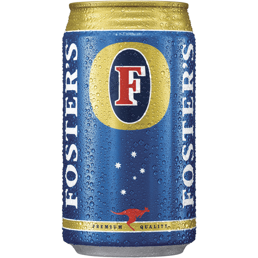
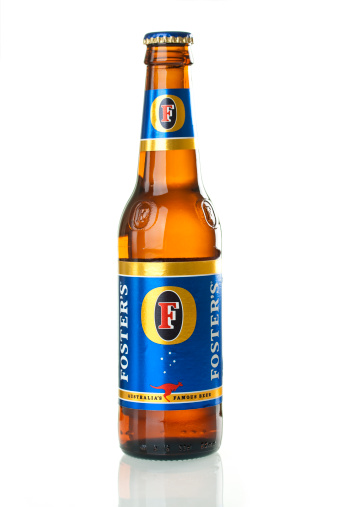
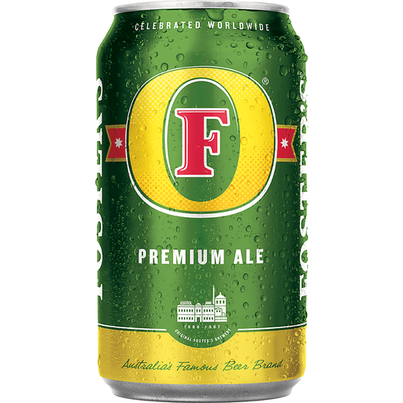

Fosters
Fosters

Fosters Beers
  It’s the perfect cold beer to enjoy in the local with friends. Our original lager is also available in 440ml cans, so pop a can in the fridge and enjoy served cold at home.
FOSTER’S is an easy-drinking lager that is perfectly balanced with moderate vanilla tasting notes. With no hard edges or bitter aftertaste, it delivers ultimate refreshment at any time of year. The beer is made with six simple ingredients (water, malted barley, glucose syrup, barley, hops, hop extract), and the brewing process is the same today as it was when the Foster brothers first brewed it in 1888.
This beer pours a brilliant, deep amber color.It has a cracked grain aroma with hints of floral hops and biscuit. The flavor is light caramel with toasted notes. It has a slight bitterness. Medium bodied with a smooth mouthfeel.